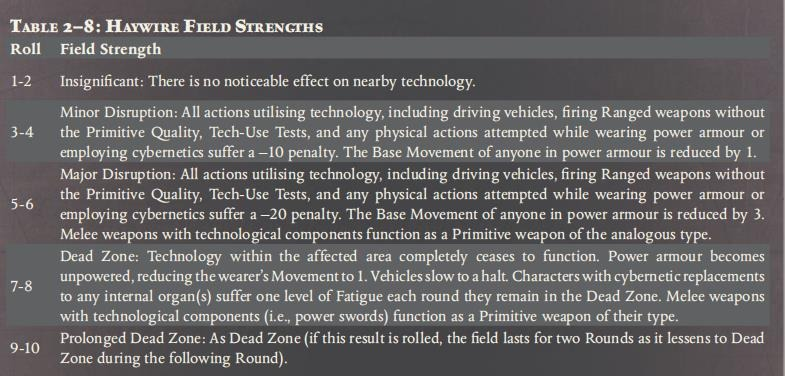
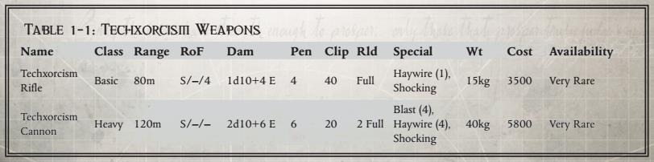
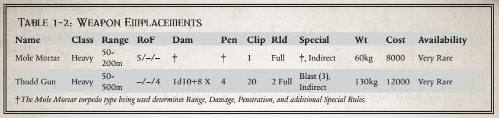
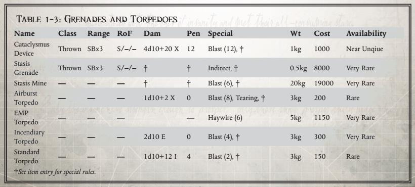
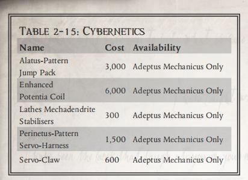

| 名称 | 类型 | 射程 | 模式 | 伤害 | 穿甲 | 弹匣 | 装填 | 特性 | 重量 | 价值 | 稀有度 |
|---|---|---|---|---|---|---|---|---|---|---|---|
| 拉斯型激光手枪 | 手枪 | 40 | S/2/- | 1d10+5E | 2 | 撕裂 | 2 | 150 | 稀有 | ||
| 拉斯型激光步枪 | 基础 | 100 | S/2/- | 1d10+5E | 2 | 撕裂 | 4.5 | 200 | 稀有 | ||
| 拉斯型激光爆破枪 | 基础 | 80 | S/-/4 | 1d10+5E | 8 | 撕裂 | 6 | 950 | 罕见 | ||
| 相位离子步枪 | 基础 | 100 | S/2/4 | 2d10 | 6 | - | 12 | 1200 | 稀有 | ||
| 质量发射器 | 基础 | 120 | S/-/5 | 1d10R | 12 | - | 7 | 600 | 稀有 | ||
| 重型质量发射器 | 重型 | 150 | S/-/10 | 1d1+4R | 12 | - | 16 | 2800 | 稀有 | ||
| 重力脉冲发射器 | 重型 | 20 | S/-/- | * | - | 爆炸（6），不准确 | 24 | 4700 | 罕见 | ||
| 电鞭 | 近战 | 1d10+5E | 4 | 柔韧，震击 | |||||||
| 拉斯型电弧焊 | 近战 | 1d10+5E | 10 | 笨重，无力量加成 | |||||||
| 重击锤 | 近战，投掷 | 1d10+2E | 5 | 笨重，力量加成翻倍 | 稀有 | ||||||
| 机神权杖 | 近战 | 1d10+10E | 7 | 平衡，柔韧，能量 | 仅机械教 | ||||||
| 狩猎之刃 | 近战，投掷 | 1d5+3R | 4 | 锋利 | 罕见 |
Often seen in the hands of Venatorii Decani, and sometimes even the fabled Electro-Priests, Coil Whips are long, segmented chains that glow brightly with electrical energy. Swung in a great arc that fills the air with forks of man-made lightning, this integrated melee weapon can knock a man in full power armour off his feet with a single blow.
电鞭经常出现在猎兵队长的手中，有时甚至出现在传说中的电僧手中，它是一种长而分段的链条，通电时能发出明亮的光芒。这种集成近战武器以巨大的弧线挥舞，在空中创造出充满人造闪电的网络，仅仅一击就能把一个穿着全身动力甲的人击倒。
Whilst not technically a weapon, this manufactorum tool is mostly used for delicate construction work in the Lathes system, but can easily double as an extremely dangerous melee device. Capable of firing intense blasts of heat at very short ranges, an arc-welder easily cuts through most personal armour, and the resulting electrical damage to the target can fry organs from the inside out.Aside from its profile in melee, an arc-welder is capable of cutting through metres of adamantine plating, up to 40 centimetres
thick every minute (thinner material can be cut through faster). Arc-welders are usually mounted on the wrist and can rapidly extend outwards for use, making them easily concealable. All enemy Weapon Skill Tests to Parry arc-welder attacks suffer a –20 Penalty due to its method of operation.
虽然从理论上讲电弧焊不是武器，但这种制造工具主要用于拉斯系统中的精细制造工作，但很容易兼作极其危险的近战武器。电弧焊能够在非常短的距离内发射强烈的热爆炸，很容易穿透大多数个人盔甲，对目标造成的电损伤会从内到外灼伤器官。除了近战中有如此形象外，电弧焊还能够切割数米厚的精金护板，每分钟可以切割长达 40 厘米（较薄的材料可以更快地切割）。电弧焊通常安装在手腕上，可以快速向外延伸使用，使其易于隐藏。所有敌方使用武器技能测试招架电弧焊的攻击都会因其操作方法而受到-20 的惩罚。
Never intended for combat, the Navitus-Pattern Percussion Mallet was designed to enhance the brute strength of the user in any task that required a hammer—anything from beating weld-nails to hammering dents out of hull plating. Used widely among the menials that toil endlessly within the forges of the Lathe Worlds, Percussion Mallets are relatively common, although finding someone willing to sell one and risk the Adeptus Mechanicus’ wrath is often a far harder task.
The Navitus-Pattern Percussion Mallet doubles the User’s Strength Bonus when calculating Damage (or increases the users Unnatural Strength multiplier by 1), and can be used as a Thrown Weapon.
纳维图斯型重击锤并非用于战斗，而是为增强使用者在任何需要锤子的任务中的蛮力而设计，从敲打焊接钉到锤平船壳板上的凹痕，无所不能。在拉斯世界的锻造厂中，无休止劳作的苦力们广泛使用这种重击锤，因此它相对常见，但要找到甘愿承受机械教怒火出售这项物品的人，往往难上加难。使用纳维图斯型重击锤时，使用者的伤害计算中力量加值翻倍（或其非自然力量乘数增加 1），并且可以作为投掷武器使用。
The Omnissian Rod is an exceptionally rare device, gifted only to the highest-ranking members of the Cult Mechanicus. Longer than a man is tall, the rod is adorned with the doubleheaded eagle of the Imperium as well as the cog and skull symbol of the Mechanicum, in a way that shows the unity of the two organisations and the alliance the God-Emperor struck with the Mechanicum millennia ago. The Omnissian Rod is more than just a symbol, however, but is in fact a dangerous weapon, capable of blasting enemies at range and smashing them to pieces in melee. The Rod comprises flexible, linked sections that come apart into a thick chain at the whim of the user, and each swing crackles with barely contained energy that is very hard to defend against. The rod can return to a rigid length of metal in an instant, making it an excellent defensive weapon. Energy can also be channelled along the length of the rod, and fired in a series of blasts that have a similar effect to a plasma weapon, meaning that no one can escape the Magos’ fury. The bearer of an Omnissian Rod receives a +20 bonus to Interaction Tests involving followers of the Machine God, and due to its prominent display of the Imperial Aquila— something of an oddity among the Adeptus Mechanicus—it will improve the Disposition of those loyal to the Imperium interacting with the bearer of the rod by one step. An Omnissian Rod is gifted only to high-ranking Tech-Priests, and thus not available for normal purchase except through illegal trading dens and the like.
机神权杖是一种极其罕见的装置，仅赠予机械教中地位最高的成员。这根权杖比一个成年男子还要长，上面装饰着帝国的双头鹰以及机械教的齿轮与骷髅标志，彰显了这两个组织的统一以及数千年前帝皇与机械教结成的联盟。然而，机神权杖不仅仅是一个象征，它实际上还是一件危险的武器，能够在远距离击溃敌人，在近战中将其击得粉碎。

这根权杖由灵活的链节组成，使用者可以随心所欲地将其拆解成一条粗重的铁链，每一次挥动都伴随着难以抵挡的、几乎要溢出的能量。权杖还能瞬间恢复成一根坚硬的金属棒，使其成为一件出色的防御武器。能量也可以沿着权杖传导，并以一系列类似等离子武器的冲击波发射出去，这意味着没有人能够逃脱机械神甫的怒火。持有机神权杖者在与机械神教信徒进行互动测试时可获得 +20 的加值，而且由于其显著展示着帝国之鹰——在机械教中这算是个异类——它会使与权杖持有者互动的帝国忠诚者的好感度提升一级。机神权杖仅赠予高级机械神甫，因此除了通过非法交易场所之类的途径，无法正常购买。
Only ever seen in the hands of the Crimson Guard, the Venator Blade is a long dagger of Lathe construction. Like other Lathe weapons, its exceptional craftsmanship makes it almost impossible to destroy, whilst dealing far more damage than normal. A Venator Blade grants its user a +15 to Weapon Skill Tests and cannot be destroyed by the effects of a Power Field. It counts as having an Armour value of 35 if directly attacked. Venator Blades are always considered Best Craftsmanship, and these bonuses are already included in their rules.
这种狩猎之刃仅出现在猩红卫队手中，它是采用拉斯材质制成的长型匕首。与其他拉斯武器一样，其精湛的工艺使其几乎难以被摧毁，同时造成的伤害也远超常规。拥有狩猎之刃的使用者的武器技能测试值会提高 +15，并且不会受到能量场的影响而被摧毁。如果直接受到攻击，它会被视为具有 35 点护甲值。狩猎之刃始终被视为工艺精湛的武器，这些加成也已包含在其规则之中。
Haywire weapons use blasts of electromagnetic radiation to destroy the inner workings of machines and technological devices. Everything within the field’s radius (in metres), indicated by the number in parenthesis, is affected. Roll 1d10 on the table below (adding any modifiers from the weapon) to determine the strength of the effect. As the field dissipates, the effect lessens one step each Round until it becomes Insignificant (i.e. a result of Major Disruption would become Minor Disruption the following round and then cease to have an effect the round after that). Additional Haywire attacks in the same area do not stack, but instead create a new effect that will either be ignored if lower than the current effect or replace it if higher.
紊乱武器使用 EMP 来摧毁机器和技术设备的内部运作。括号中的数字表示的场地半径（以米为单位）内的所有机械物品都会受到影响。在下表中投 1d10（加上武器的修正值）以确定效果的强度。随着紊乱场的消散，每一轮的影响都会减少一级，直到变得无关紧要（即重大干扰的结果将在下一轮变成轻微干扰，然后在下一回合后不再产生影响）。同一区域的其他紊乱攻击不会叠加，而是会产生一种新的效果，如果低于当前效果，则会被忽略，如果高于当前效果，会被替换（效果取大）。
1-2：微不足道：对附近的技术没有明显影响。
3-4：轻微干扰：所有使用技术的行为包括：驾驶车辆、使用非原始武器发射远程弹药、技术应用测试，穿着动力甲或使用生化义肢的任何物理动作，都将受到-10 的惩罚。任何身穿动力甲的人的基础移动都会减少 1。
5-6：重大干扰：所有使用技术的行为包括：驾驶车辆、使用非原始武器发射远程弹药、技术使用测试，穿着动力甲或使用生化义肢的任何物理动作，都将受到-20 的惩罚。任何身穿动力甲的人的基础移动都会减少 3。带有技术部件的近战武器失效变为类似类型的原始武器。
7-8：死区：受影响区域内的技术完全停止运行。动力甲变为无动力，将穿戴者的移动速度降低到 1。车辆缓缓停下。对任何内脏器官使用生化义肢替换的角色，在死区范围内每一轮遭受一级疲劳。带有技术部件的近战武器失效变为类似类型的原始武器。
9-10：持续死区：作为死区（增加一回合死区效果，下回合将为死区）。
Maximal weapons have two fire settings, allowing the wielder to either use the weapon at its lower setting to conserve ammo (and allow a higher rate of fire), or make single, powerful blasts requiring the weapon to recharge between shots. Before making an attack the user can choose to either fire the weapon normally, in which case it uses its regular listed profile, or to fire it on Maximal. When the weapon is fired on Maximal, it adds 10 to its range, adds 1d10 to its Damage, and +2 to its Penetration. If it has the Blast Quality then this is improved by +2, i.e., a weapon with Blast (3) becomes Blast (5). The weapon also uses three times the normal amount of ammo per shot and adds the Recharge Quality.
全力武器有两种射击设置，允许持用者在较低设置下使用武器以节省弹药（并获得更高的射击速度）；或者切换为单次强大的爆炸射击，但是要求武器在射击之间充能。在发动攻击之前，使用者可以选择正常发射武器，在这种情况下，它使用其常规列出的配置文件；或者使用全力发射。当武器使用全力射击时，其射程增加 10，伤害增加 1d10，穿甲增加 2。如果它具有爆炸，那么它的爆炸范围将提高 2，即具有爆炸（3）的武器将变为爆炸（5）。该武器每次全力射击会使用正常弹药量的三倍，并增加了充能。
Weapons with a Proven Quality always inflict massive trauma, and treat any die roll for Damage lower than the Proven rating (as indicated by the number in parenthesis) as if it were the Proven rating. For example, a Proven (3) weapon would treat any die roll of 1 or 2 as a 3 for the purposes of calculating Damage.
具有久经考验的武器总会成毁灭性的伤害。任何低于久经考验值的投掷都会转化为久经考验值（如括号中的数字所示）。例如，一个拥有久经考验（3）的武器投出了 1 或 2 点伤害，它都会变成 3 点伤害。
The edges of these claws or blades are honed to an unnatural degree and can slice through most armour with ease. When the Weapon Skill or Ballistic Skill Test for an attack with this weapon results in two or more Degrees of Success, double the weapon's Penetration Value for that attack.
这些爪子或刀片的刃部被打磨到超自然的程度，可以轻松地穿过大多数盔甲。当使用此武器进行攻击的武器技能或射击技能测试时有两个以上个成功度时，将该攻击的武器穿透值加倍。
The weapon doubles the amount of hits inflicted on the target. For example, when firing a weapon with the Storm Quality in fully automatic mode, each Degree of Success yields two additional hits (up to the weapon’s firing rate, as normal). Storm Weapons consume ammunition at twice the normal rate.
该武器使对目标的命中次数增加了一倍。例如，在全自动模式下使用风暴品质射击武器时，每个成功度都会产生两次额外的命中（正常情况下，最高可达武器的射击频率）。风暴武器消耗弹药的速度是正常速度的两倍。
A twin-linked weapon represents two identical weapons connected together and linked to fire at the same time, often through one pull of the trigger, increasing both the chances of hitting and the damage that can be caused. A weapon with the Twinlinked Quality gains a +20 bonus to hit when fired and uses twice as much ammunition. In addition, the weapon may score one additional hit if the attack roll succeeds by two or more Degrees of Success. Finally, the weapon’s reload time is doubled.
双联武器代表两件相同的武器连接在一起，通常是通过一次扣动扳机同时开火，这增加了命中的机会和可能造成的伤害。具有双联的武器在射击时命中会获得+20 的修正，并使用两倍的弹药。此外，如果攻击投掷达到两个以上个成功度，武器会额外命中一次。但是武器的装填时间加倍。
有些人会说，机械神教对技术的依赖是一种弱点，机器所扮演的角色对他们而言，不过是只有次等人才会需要的拐杖。机械修会当然持相反看法，他们认为，唯有通过与机器的金属结合，人类才能超越血肉之躯，成为欧姆尼赛亚的一部分。机械教派在战斗中所展现的技术实力和神秘装置，或许是他们信仰正确的终极证明，而且，当鼹鼠迫击炮（mole mortar）从地面喷发，以及天劫装置（Cataclysmus Devices）释放核能狂暴时，无疑很少有在战斗中面对他们的人会提出异议。
机魂驱逐武器利用一种专门设计用于摧毁技术、驱逐机魂的独特能量形式，一发爆能即可令整支伺服机仆小队失效，或让一名技术神甫因所有植入物失灵而倒地绝望喘息。若由拉斯选择，他们定会禁用此类武器，但遗憾的是，对卡利西斯的机械教而言，星区内还有其他强大的组织将这些武器视为对抗人类之敌战争中的关键工具。传说它们是玛

琉格利斯技术异端所导致的被禁产物。没有卡利西斯的铸造世界制造这些武器，即便有，它们也不愿承认，但此类武器的实例似乎遍布整个星区的犯罪地下世界。机魂驱逐武器有众多型号，但最常见的一种是常用于压制火力的速射步枪，以及一种一发爆能即可令整支敌军小队陷入无助的高度破坏性加农炮。龙领主的代理人们会对传闻中的机魂驱逐武器藏匿点或生产此类武器的异端铸造厂迅速做出反应，但即便是他们敏锐的目光也无法同时遍及所有角落。要使用机魂驱逐武器，角色必须拥有特种武器训练（机魂驱逐）天赋。
当机魂驱逐武器攻击活体目标时，它会根据其特性中列出的震击造成伤害。被机魂驱逐武器攻击的活体目标在抵抗其震击特性效果的检定时，会额外受到-20 的难度加值。
机魂驱逐弹药是非常稀有（的稀有度），每发射 10 次需消耗 80 个王座币。机魂驱逐步枪和机魂驱逐加农炮均可与背包弹药供应相连，这将使武器的弹夹容量翻倍，同时翻倍延长装填时间。
虽然大多数机械神教的武器都是人力（或机仆）便携式的，但也有一些武器装备更适用于固定操作。一旦被牢牢固定在地面上，这些武器装置就能向万机神的敌人倾泻毁灭性的火力。
哈德型鼹鼠迫击炮发射特制的钻地鱼雷，这些鱼雷在地表之下或紧贴地表之处引爆。该鱼雷能够穿透几乎任何物质，而新曙光（Aurora Novos）的技术神甫已重新发现了多种不同的弹药类型，以增强这一奇特武器的战术灵活性。
在赫特型轻剑炮（Het-Pattern Rapier）重新引入的推动下，一个自称为新曙光的拉斯-哈德（Lathe-Hadd）技术神甫小派系，开始研究并制造其他古老的大远征时代火炮阵地，希望以此激励他们日渐衰落的铸造世界走向复兴。哈德型雷动炮便是这些设计中的首个成果，且在当时是一种颇为奇特的武器。整个帝国的许多攻城团都使用雷动炮，或更常被称为四管迫击炮（Quad Launcher），但大多数使用的是卢修斯型（Lucius-pattern）：一种基本的后膛装填武器，必须在各个战场之间拖行。哈德型（Hadd-pattern）则更为精密，拥有自己遥控驱动的机动系统，其特色在于四个低置的重力供弹弹匣，使该武器在重新装填前能够连续射击长达一分钟之久。新曙光的技术神甫的努力在被叫停之前，还能继续制造这种武器多久尚不可知，但某些帝国卫队指挥官（Guard Commanders）、行商浪人，甚至几位审判官，都已对这种早已失传的设计的复兴产生了兴趣。
由于这门雷动炮（Thudd Gun）由四门联装迫击炮组成，以齐射方式开火，该武器始终使用间接的自由动作（Indirect Fire Action）进行射击。雷动炮的每个弹匣（clip）容纳 5 发炮弹。
鼹鼠迫击炮（Mole Mortar）所发射的鱼雷类型，决定了其射程、伤害、破甲以及额外的特殊规则。

万机神的奥秘在其仆从们为彰显他的荣耀而使用的奇妙装置中显而易见。对于那些罕见的造物而言，这一点尤为真切——它们能将耀眼的光芒投射到那些试图躲避他目光之人身上，甚至将他们定格于时间之中，以便在其意识到自身命运之前将其解决。
静滞手雷在卡利西斯的铸造世界贝拉肯（Belecan）以极小的数量生产，它们将爆炸范围内的人困在（或保存于）一个时间减缓的气泡之中。对于静滞场内的人来说，周围的一切都似乎在以极快的速度运动；而对于场外的人来说，场内的人仿佛完全静止不动，因为他们的动作是如此缓慢。静滞手雷的能量消耗极快，因此其力场会在片刻间崩溃，但它们仍是捕获重要猎物或在仓促撤退时扰乱追兵的绝佳工具。
静滞手雷的半径为 2 米，该半径内的任何事物都将被冻结于时间之中，在 1d5 回合内无法执行任何行动。外部人员无法攻击或与静滞场半径内的任何人进行互动。静滞手雷被视为特种武器（Exotic Weapons），角色必须拥有相应的天赋才能有效使用。
对于那些负担得起的人来说，贝拉肯铸造世界的静滞地雷是一种极佳的防御手段，堪称绝妙的警报系统。其体积远大于静滞手雷，内部的能量系统能将受害者困住近一个小时，甚至可以充能并重复使用。
静滞地雷拥有一个可变的探测半径，最远可达 5 米，并且可以设置为探测特定体型的生物（例如，可设置为探测体型为（大型）及以上的生物，而忽略体型更小的生物）。一旦探测到预设目标，它们便会自动激活，中断触发地雷的任意角色正在执行的行动。静滞地雷的半径为 6 米，该半径内的任何事物都将被困住，并在 3d10 分钟内无法执行任何行动。外部人员无法攻击或与静滞场半径内的任何人进行互动。优秀品质（Good-Craftsmanship）的静滞地雷配备有远程引爆器，允许使用者随意激活和关闭静滞场。使用后，静滞场可通过一次困难（-10）的技术应用检定进行充能。如果失败三度或以上，则意味着场发生器已烧毁，该地雷就此失效。静滞地雷被视为特种武器，一名侍僧必须拥有相应的天赋才能有效使用。
因“对过去缺乏足够的尊重”而被从拉斯-哈德（Lathe-Hadd）地表驱逐后，一个机械教的小型支派从拉斯世界逃离，前往别处继续他们危险的实验。关于他们逃往黑暗世界缺隙星（Lacuna）的传言尚未得到证实，但已知的是，他们成功地复兴了一项长期被机械修会斥为过于浪费和低效的技术，即古老且被广泛禁止的重物质微裂变（heavy material micro-fission）方法。然而，与同类设计的大型装置不同，该教派试图制造一种可用于近距离交火的便携式手持装置。
任何处于天劫装置爆炸半径内的人，都必须进行艰巨（-30）的力量检定，否则将被击倒至倒地。任何在天劫装置爆炸中幸存下来的角色，都必须进行一次困难（-10）的坚韧检定，每一失败度承受一点永久性的坚韧损伤。受影响的角色必须每小时重复此检定，直至接受抗辐射治疗。天劫装置过于容易引爆，无法从榴弹发射器中发射，只能

投掷。
每回合，鼹鼠迫击炮的操作员可以更换炮弹的类型。由于该发射器及其弹药均十分稀缺，每发弹药均需单独购买。由于它们从地下毫无预警地袭来，对炮弹攻击进行的闪避检定，在应用任何其他调整值之外，还需承受-30 的减值。
这种高爆炸药在抵达地表前的一瞬间引爆，将集中的爆炸威力直接向上方释放。被标准炮弹击中的任何人，都必须进行困难（-10）的力量检定，否则将被打击至倒地。爆炸区域自此之后被视为困难地形（difficult ground）。
空爆鱼雷被设定为在从地面跃出后的极短时间内爆炸，将锋利的破片向四面八方发射。空爆鱼雷将使目标从掩体获得的任何护甲值减半（向上取整）。
与空爆鱼雷类似，燃烧鱼雷也在离开地面后随即爆炸。然而，它们释放的不是破片，而是向四面八方泼洒钷素。被燃烧炮弹击中的任何人，都必须进行困难（-10）的敏捷检定，否则将着火。
译注：着火时每轮失去 1d10 承伤（忽视护甲防护）并得到 1 点虚弱，直到火焰熄灭。着火造成的伤害在计算致命伤害时视为作用于躯干的能量伤害。
着火时，必须进行意志检定，成功可以正常行动，失败则只会四处奔跑尖叫（视为完整动作）。
着火的角色可以花费一个完整动作扑灭身上的火焰，这需要进行一个艰难的（− 20）敏捷检定。难度可视环境因素调整。例如附近有水源，有同伴帮助，大风等。
电磁脉冲鱼雷在抵达地表的那一刻即被激活，它们不会直接损伤目标，而是向四面八方释放一波又一波的电磁辐射，直至鱼雷的小型发电机烧毁为止。
Although the more stringent members of the Mechanicus Priesthood consider it heretical, this transparent material is fast becoming a necessary part of the day-to-day operations within the Lathe Worlds. Viscous and highly conductive, core-gel acts as a surrogate for Electoo-inducers and MIU links, giving those who lack these forms of implants access to cogitators and data crypts. It is most often found on Lathe-Het, where the gel has become almost mandatory to access the older and more decrepit data-crypts with no longer supported interface technologies. A character can use an application of Core-Gel to access machinery that would otherwise require an Electro-Graft or MIU interface, even if he does not possess these implants. Core-Gel decays quickly, and must be cleaned away and reapplied every hour. Each canister of core-gel contains enough for two applications.
尽管机械神甫中更为严格的成员认为它有悖教义，但这种透明物质在拉斯世界日常运作中已逐渐成为不可或缺的一部分。这种凝胶粘稠且导电性极强，可作为电子接口和思维刺激设备的替代品，让那些没有此类植入物的人也能使用沉思者和数据密室。它在拉斯-赫特最为常见，在那里，由于老旧且接口技术不再受支持的数据接口，使用这种凝胶几乎已成为必须。人物可以使用核心凝胶来操作那些通常需要电子接口或思维刺激设备的机械装置，即便他自身没有这些植入物。核心凝胶会很快降解，每小时都必须清理干净并重新涂抹。每罐核心凝胶可供使用两次。
The Scatter-Caster is an exceptionally heretical device, that the Tech-Priests of the Lathe Worlds despise for the way it disrupts their control over servitors and Servo-Skulls. Also known as binary bombs or cant grenades throughout the low echelons of Enginseers,these heavy generators pump out discordant frequencies, lingua technis gibberish, and invalid scrapcode, blanketing a wide area in disruptive white noise that sounds like static to most people, but is unbearable to those of the Mechanicum. A Scatter-Caster has a range of 25 metres, and anyone with Mechanicus Implants suffers a –10 to all Tests whilst they remain within this area. Giving orders to servitors, Servo-Skulls and other familiars becomes next to impossible, imposing a –50 penalty to all Tests to control them. Good Quality scatter-casters have a range of 50 metres, and BestQuality scatter-casters have a range of 100 metres.
散射干扰器是一种极其异端的装置，拉特世界的机械神甫们对其深恶痛绝，因为它会扰乱他们对机械仆从和机械颅骨的控制。在引擎师的低级阶层中，这种装置也被称为二进制炸弹或废话手雷。这种重型发生器会释放出不和谐的频率、技术语的胡言乱语以及无效的废代码，在一定范围内形成干扰性的白噪音，对大多数人来说听起来只是静电干扰，但对于机械神教的人来说却是难以忍受的。散射干扰器的作用范围为 25 米，任何植入机械神教植入物的人在该范围内进行所有测试时都会受到 -10 的惩罚。向机械仆从、机械颅骨和其他同类下达命令几乎变得不可能，控制它们的所有测试都会受到 -50 的惩罚。优质散射干扰器的作用范围为 50 米，最佳品质的散射干扰器的作用范围为 100 米。

Cybernetic augmentations are common throughout the Lathes; indeed, a Tech-Priest who does not continue his transformation from weak flesh to holy machine as he ascends in rank is rightly viewed with suspicion as to his faith.
植入物的增强手术在拉斯上很常见；事实上，一个科技牧师如果没有持续的从软弱的肉体转变为神圣的机器，那么他的信仰就会受到怀疑。
Broad and baroque in design, the Alatus-pattern Jump Pack differs from other, similar, devices due to the way it is surgically attached to the user and draws its power internally from their Potentia Coil. Plugs and connections from the unit link directly into the user’s nervous system, allowing them to control the Jump Pack’s movements with the slightest thought. Often taking the form of a sweeping pair of mechanical wings, the Alatus-pattern Jump Pack is a common sight among the elite Celerii formations of the Crimson Guard—the personal bodyguards of the Venatorii commanders.The Alatus-pattern Jump Pack doubles the user’s base movement value, or can be used to gain the Flyer (12) Trait for up to one minute. Extended flights tend to drain Potentia Coils far quicker than short jumps, so the user must pass a Challenging (+0) Toughness Test after using the jump pack to gain the Flyer Trait or gain one level of Fatigue. The mechanical wings grant the user the Fear (1) Trait, and can be used to buffet the enemy in combat, granting the user a +10 to all Parry Tests. The Pilot (Alatus Jump Pack) Skill, and the Mechanicus Implants Trait are required to use an Alatus-pattern Jump Pack.
阿拉图斯型跳包不同于其他类似的设备是一种宽阔和巴洛克式的设计，因为它是通过手术连接到用户身上并从他们的储压线圈内部汲取能量。这个装置上的插头和连接线直接连接到用户的神经系统，让他们用最轻微的想法来控制跳包的动作。阿拉图斯型跳包通常以一对机械翅膀的形式出现，在迅袭者精锐的深红卫队中很常见——深红卫队是猎兵指挥官的私人保镖。阿拉图斯型跳包使用者的基础移动值加倍，或者可以用来获得飞行者（12）特质，持续一分钟。长时间的飞行往往会比短时间的跳跃更快地消耗潜在线圈，所以使用跳跃包获得飞行者特质的用户必须通过一个具有挑战性的（+0）韧性测试，若失败则获得一级疲劳。机械翅膀赋予使用者恐惧(1)特性，并且可以在战斗中推开敌人让使用者在所有招架测试中获得+10。使用阿拉图斯型跳包需要导航（阿拉图斯型跳包）技能和机械装殖。
Designed as a more heavy-duty replacement for standard internal power units, the Enhanced Potentia Coil can be taxed at a far greater level in order to enhance the many abilities common to members of the Machine Cult. Installation of an Enhanced Potentia Coil involves difficult and invasive surgery, and thus the time taken to add the Enhanced Potentia Coil is 1d5+1 weeks. PoorQuality Enhanced Potentia Coils leave the user with a noticeably